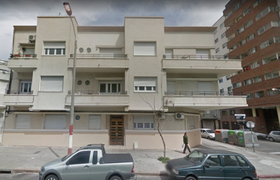

CONSTRUCCION
DATOS DE CATASTRO
- CALIDAD DE CONSTRUCCION: Media
- ESTADO: Regular
- TIPO DE OBRA: Regular
- TECHO: Losa o bovedilla
- UBICACION: Al frente
- FECHA PERMISO DE CONSTRUCCION: 1938
- INCLUIDA EN SONA COMPRENDIDA POR LEY DE VIVIENDA SOCIAL:No
- RETIRO OBLIGATORIO: 0 m
- TIPO DE SUELO: Orogneisis Pta. Carretas (roca)
CARPETA CATASTRAL

VOLVER